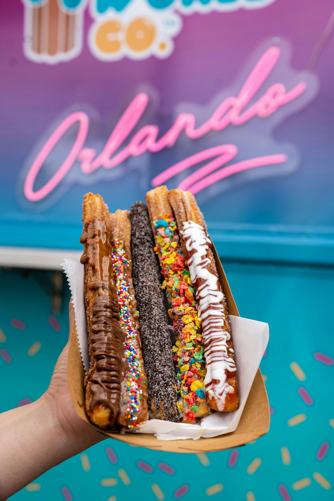
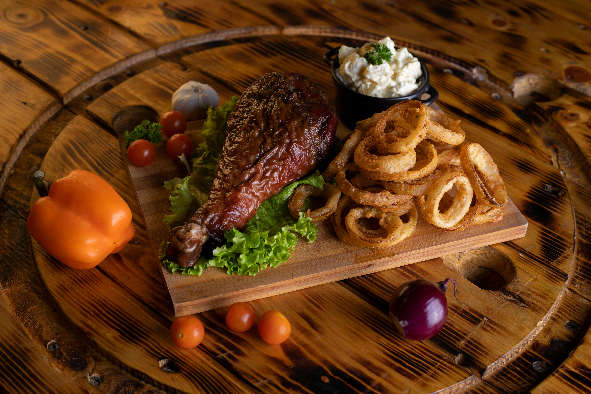
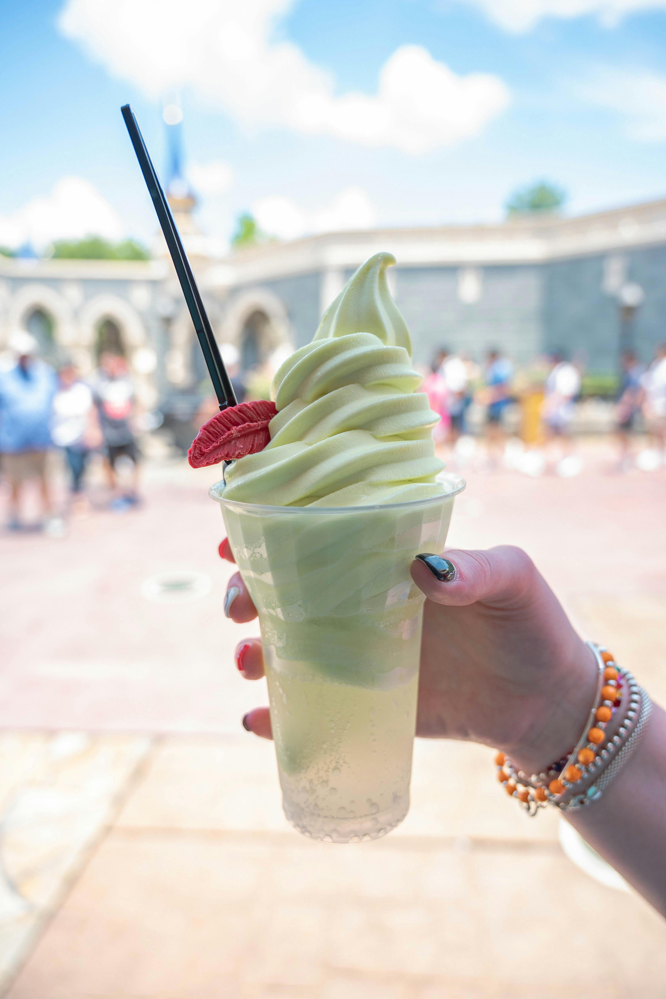
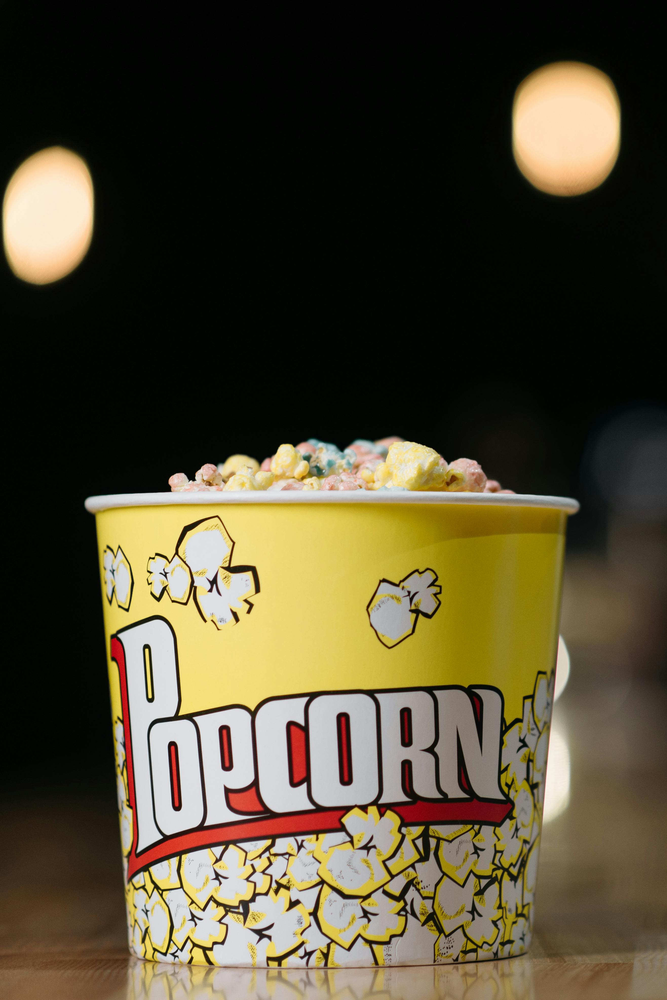
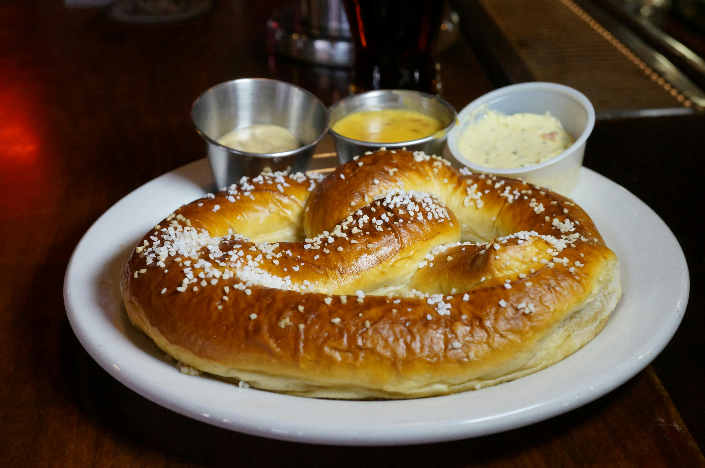

Churros
Deliciosos churros crocantes por fora e macios por dentro, polvilhados com açúcar e canela, perfeitos para acompanhar um mergulho em chocolate quente ou doce de leite. Uma sobremesa clássica que traz um toque de magia e sabor a cada mordida!

Coxa de peru
Suculenta coxa de peru assada, temperada com ervas e especiarias, resultando em uma carne macia e saborosa. Perfeita para ser servida como prato principal, acompanhada de purê de batatas ou legumes assados, proporcionando uma refeição deliciosa e reconfortante.

Dole Whip
Uma deliciosa sobremesa inspirada no clássico Dole Whip da Disney, feita com leite condensado e saborizada com baunilha. Perfeita para aqueles que desejam experimentar um sabor nostálgico em um ambiente mágico!

Pipoca
Uma deliciosa pipoca doce, perfeita para ser servida em copos ou como acompanhamento de pratos principais. Com seu sabor único e textura crocante, é uma opção irresistível para todos os momentos de celebração!

Pretzel
Um delicioso pretzel macio e salgado, perfeito para ser servido como lanche ou acompanhamento. Com sua textura única e sabor irresistível, é uma opção clássica que agrada a todos os paladares!